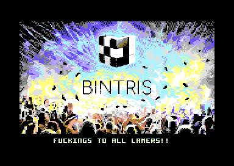
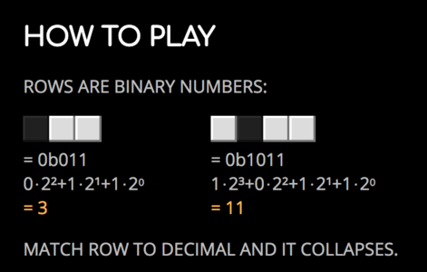

BINTRIS on the C64 has been released! (series part 2)

The Commodore 64 version of BINTRIS has been released!
Download the latest BINTRIS disk image: bintris-2018-05-22.d64
(Originally released on CSDb but further updates will be posted here on the blog.)
Here’s a quick VICE video cap (real hardware capture is coming online very soon):
Here’s the game objective in a nutshell:

Next in series
The next post will discuss how the title screen mixes multicolor bitmap mode (the BINTRIS image) and text mode (the scroller).
All posts in this series: